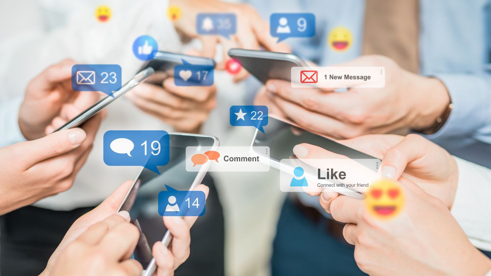
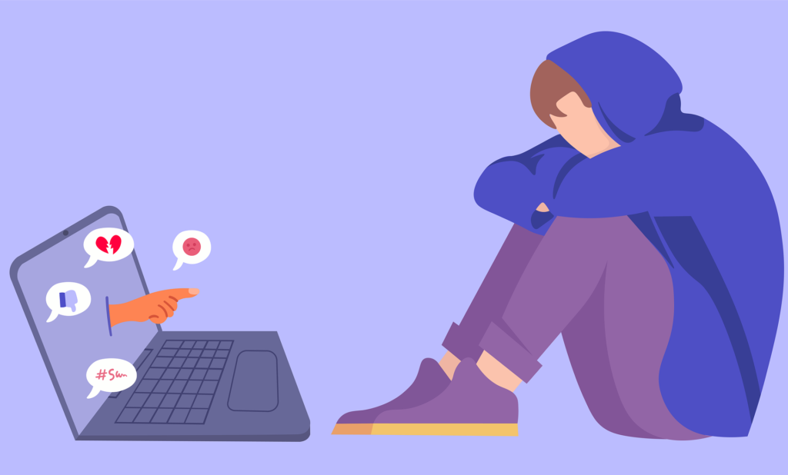
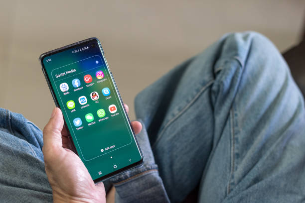

Remaja pada zaman ini telah terbiasa dengan media sosial seperti Facebook,
Twitter, Instagram, serta aplikasi messaging seperti Whatsapp. Banyak manfaat yang bisa diperoleh dari media
sosial. Misalnya, bisa menambah sahabat dan teman baru dan berkomunikasi dengan mereka
walaupun tidak bertatap muka, dan juga bisa dengan cepat
membuat orang memperoleh berita dan informasi terbaru.
Namun di balik manfaat juga terdapat dampak negatif, baik oleh penggunanya atau orang lain. Seperti terjadinya perundungan di antara anggota
masyarakat. Lewat media sosial, seseorang bisa menyebarkan hoaks atau misinformasi mengenai orang lain. Berita tidak benar atau malah segala
jenis fitnah bisa terjadi melalui media sosial ini.
[1]
Apakah Anda pernah menemui status seorang teman di Whatsapp yang berisi
sebuah curhatan? Atau yang lebih parah lagi, melihat status seseorang
yang berisi sumpah serapah dan hujatan kasar. Mengapa seseorang lebih
mudah mengekspresikan perasaannya atau pikirannya lewat media sosial? Bahkan orang yang
bersifat pendiam di dunia luar bisa menjadi pribadi yang sangat berbeda di dunia maya. Hal ini disebabkan karena sifat online dari
dunia maya yang tidak mengharuskan penggunanya untuk bertatap muka, sehingga
pengguna media sosial lebih berani untuk berbicara atau berekspresi.
Karena keleluasaan yang ditawarkan, membuat pengguna media sosial sering
melupakan etika komunikasi, bahkan pada beberapa kasus-kasus tertentu dapat
melanggar beberapa hukum negara.
Sama halnya dengan komunikasi di ranah publik dunia luar, pada dunia maya pun riskan menimbulkan konflik. Undang-Undang Informasi Transaksi
Elektronik (UU ITE) dibuat untuk mengatur segala hal yang berkaitan
dengan penyebaran informasi transaksi elektronik. UU ITE sebagai payung
hukum bagi masyarakat agar lebih berhati-hati dalam berbicara di dunia
maya. Kata-kata yang dituliskan lewat tangan dan jari kita, sesungguhnya
merupakan cerminan dari kepribadian kita. Jangan sampai status atau
komentar yang kita unggah di media sosial justru menebarkan kebencian,
menyinggung orang lain, bahkan menjerat kita ke dalam kasus hukum.
[2]
Berdasarkan hasil survei yang dilakukan oleh Asosiasi Penyelenggara Jasa Internet Indonesia (APJII), pengguna internet di Indonesia mencapai 215,63 juta orang pada periode tahun 2022-2023. Jumlah tersebut meningkat 2,67% dibandingkan pada periode tahun sebelumnya yang sebanyak 210,03 juta pengguna. Jumlah pengguna internet tersebut setara dengan 78,19% dari seluruh populasi Indonesia yang sebanyak 275,77 juta jiwa. [3]
Dampak Media Sosial dari Sisi Positif

1. Mempermudahkan Komunikasi Kapanpun dan Dimanapun
Kalau dulu, jarak menjadi penghalang terbesar untuk orang-orang bisa berkomunikasi. Mereka harus mengirimkan surat dan menunggunya selama berhari-hari bahkan sampai berbulan-bulan. Namun sekarang, dengan adanya perkembangan teknologi. Komunikasi menjadi lebih mudah lewat SMS, Email bahkan Sosmed untuk berinterkasi kepada orang lain tanpa harus tatap muka.
2. Meninggalkan Jejak dan Bisa Menjadi Bukti Kuat
Saat ada topik yang berisi masalah yang penting, sosial media bisa membantu kita menyimpan berbagai bukti penting. Bahkan percakapan yang dilakukan menggunakan sosial media bisa dijadikan bukti kuat pada kasus di ranah hukum.
3. Menghilangkan Rasa Jenuh
Internet dan sosial media bisa digunakan sebagai sarana hiburan. Contohnya adalah berbagai tulisan-tulisan inspiratif, unggahan video lucu, hingga berbagai tayangan informatif lainnya yang bisa kita saksikan di Internet. Adanya fitur-fitur baru yang menarik minat dan perhatian ini juga kerap digunakan orang untuk rehat dari kesibukan sejenak.
4. Membuka Peluang Pekerjaan Baru
Perkembangan teknologi terus memunculkan berbagai peluang. Bahkan, dengan adanya sosial media, banyak perusahaan yang mulai mencari dan membuka lowongan khusus bagi mereka yang mahir mengelola sosial media. Bagaimana membuat konten yang kreatif dan menarik perhatian orang lain, serta bisa membangun citra perusahaan di sosial media menjadi bidang yang sedang banyak dicari sekarang.
5. Membangun Hubungan Pertemanan Baru
Sekarang, banyak orang yang berkenalan satu dengan lainnya melalui media sosial. Bahkan mereka membuka komunitas dan aktif bertukar pesan. Tidak sedikit pula perkenalan ini menjadi koneksi yang baik untuk bisnis di kemudian hari. Uniknya, sekarang hubungan romantis juga banyak dimulai dari media sosial. [4a]
Dampak Media Sosial dari Sisi Negatif

1. Apa yang Sudah Terkirim Akan Selalu Meninggalkan Jejak
Status, foto, maupun pesan yang diunggah ke sosial media akan selalu meninggalkan jejak walaupun kamu menghapusnya. Dalam berkomunikasi terlebih melalui sosial media, hal ini menjadi sesuatu yang penting untuk diperhatikan. Pikirkan terlebih dahulu kata-kata yang hendak diucapkan, apakah tulisan, gambar, atau hal lainnya yang akan kamu post dapat melukai atau menyinggung orang lain? Apakah post tersebut mengandung unsur SARA? Itu sebabnya, bijak bersosial media merupakan suatu hal yang penting.
2. Banyak Modus Penipuan Beredar di Media Sosial
Tidak hanya dalam keseharian, kasus kejahatan juga banyak ditemukan dalam media sosial. Menyamar menjadi orang lain, meretas data pribadi seseorang, dan berbagai kejahatan lainnya semakin marak terjadi. Mulai dari penipuan pulsa, hingga uang di rekening bank bisa menjadi sasaran. Selalu berhati-hati dan waspada saat menggunakan media sosial. Jangan mudah mempercayai seseorang, terlebih yang belum pernah kamu kenal sebelumnya.
3. Banyak Hoax yang Beredar
Dalam kasus ini, mungkin setiap dari kita sudah pernah bahkan sering menerima berita hoax. Informasi yang dikirimkan dari orang yang satu ke orang lainnya memang lebih mudah dilakukan melalui media sosial. Namun, jika tidak waspada penyebaran hoax juga bisa semakin tinggi. Itu sebabnya, sebagai pengguna yang baik kita harus pintar menyaring informasi. Budaya literasi juga menjadi kunci agar kita tidak mudah terpapar informasi palsu. Jangan lupa untuk selalu mengecek kebenaran dan sumber kredibel sebelum mengirimkan informasi pada pihak lain.
4. Dampak Media Sosial Bisa Mengganggu Kesehatan Mental
Seseorang yang terlalu banyak menggunakan media sosial juga bisa memperoleh dampak negatif. Perasaan berkecil hati dengan diri sendiri, serta menganggap hidup orang lain terlihat lebih baik bisa membuat kesehatan mental menjadi terganggu. Biasanya hal ini akan menimbulkan perasaan FOMO (Fear of Missing Out). Itu sebabnya, kita harus bisa membatasi diri dalam mengkonsumsi konten di media sosial. Ada kalanya kita harus rehat dari kesibukan dunia maya demi menjaga kesehatan mental.
5. Tidak Menghargai Waktu Bersama Orang yang Berada di Sekitar Kita
Kebiasaan bermain ponsel dan menggunakan media sosial dalam keseharian membuat kita kerap lupa memberikan perhatian pada lingkungan sekitar. Sering kali, orang-orang tetap membuka media sosial saat ada orang lain yang sedang berbincang dengannya. Hal ini tentu saja menunjukkan perilaku kurang menghargai dan bisa menyinggung perasaan orang lain yang menjadi lawan bicara. Media sosial memang bisa membantu kita mendekatkan diri dengan orang yang jauh, tapi jangan sampai membuat kita berjauhan dengan mereka yang berada di dekat kita, ya. [4b]
Cara Menggunakan Internet dengan Bijak dan Benar

1. Cerdas (Hati-hati dalam Berbagi)
Era yang serba canggih ini memungkinkan informasi dapat tersebar dengan mudah dan cepat di berbagai platform media sosial. Jika pengguna media sosial tidak berhati-hati, bisa jadi justru akan terjebak dalam masalah dan tidak sedikit yang panjang akibatnya. Solusinya, siswa dapat belajar cara berbagai dan mengetahui apa saja yang dibagikan kepada orang, baik yang dikenal maupun tidak. Dalam hal ini, jenis informasi yang bisa dibagikan dan informasi yang seharusnya dirahasiakan harus benar-benar dipahami.
2. Jangan Mudah Tertipu
Siswa perlu menyadari bahwa situasi dalam dunia online tidak selalu benar, asli, atau dapat dipercaya. Membedakan mana yang palsu sangat penting agar tetap aman dalam bermedia sosial. Oleh karena itu, peran orang tua diperlukan dalam memberikan edukasi kepada anaknya. Siswa dapat mencari informasi tentang cara kerja penelusuran online dan mulai berpikir kritis saat mencari konten melalui situs website. Dalam hal ini, detikers dapat memikirkan kebenaran dari hasil penelusuran, situs, dan sumber informasi lainnya, serta mewaspadai adanya misinformasi, berita palsu, dan manipulasi
3. Jaga Rahasiamu
Bermedia sosial tidak serta merta hanya untuk iseng belaka. Keamanan informasi pribadi, akun, dan perangkat pribadi sama pentingnya dengan privasi diri sendiri. Salah satu cara yang bisa dilakukan adalah dengan membuat kata sandi yang kuat dan berkomitmen untuk tidak membagikannya kepada sembarang orang. Hal tersebut dilakukan untuk menghindari penyalahgunaan data pribadi dari orang-orang yang tidak bertanggung jawab.
4. Jadi Teladan Kebaikan
Informasi dapat tersebar luas dengan bantuan internet. Keberadaan internet dapat digunakan untuk menyebarkan informasi yang menginspirasi dan memotivasi, tetapi tidak sedikit yang membagikan pendapat yang penuh kebencian. Dalam hal bijak bermedia, siswa dapat menggunakan internet untuk membagikan hal-hal yang positif dan memberikan manfaat bagi banyak orang. Dengan demikian, siswa dapat menjadi teladan kebaikan tidak hanya di dunia nyata, melainkan di dunia maya. [5]
Sumber
1. Bijak Menggunakan Media Sosial (Kompas.com - 04/07/2022)
2. Bijak Memanfaatkan Media Sosial (Cimahikota.go.id - 27/04/2017)
3. Pengguna Internet Indonesia Paling Banyak Usia Berapa? (Indonesiabaik.id)
4. 10 Dampak Media Sosial dari Sisi Positif dan Negatifnya (Cimahikota.go.id - 06/02/2023)
5. Siswa, Ini 4 Cara Bijak Berinternet dan Bermedia Sosial (detik.com/edu/ - 17/01/2022)